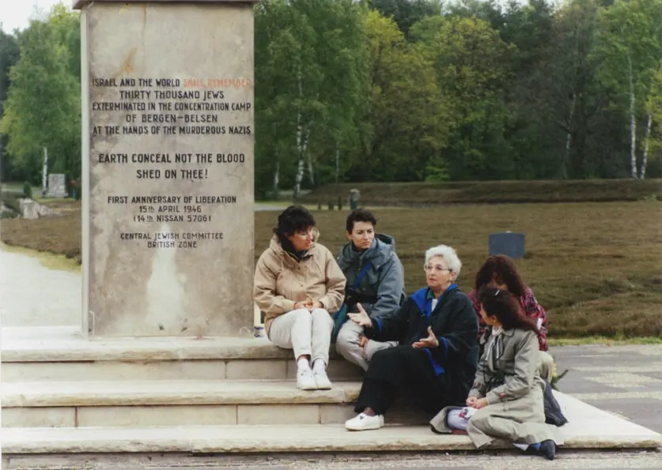
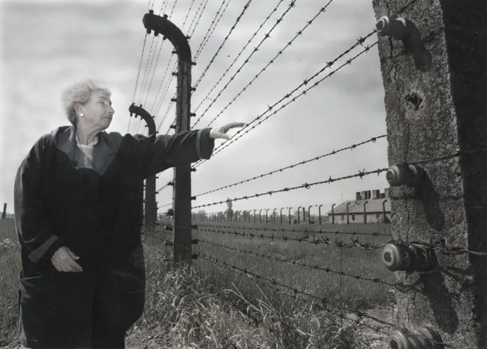
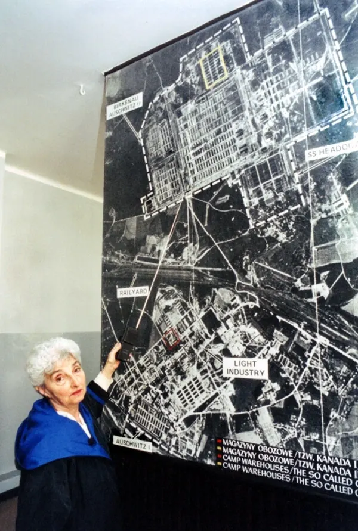
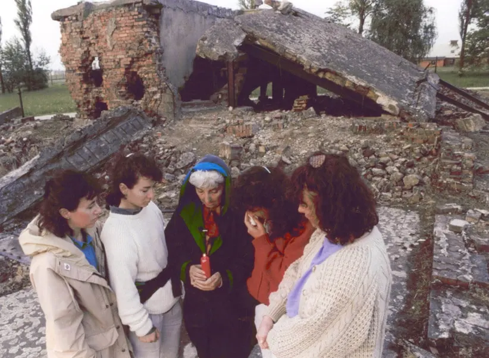
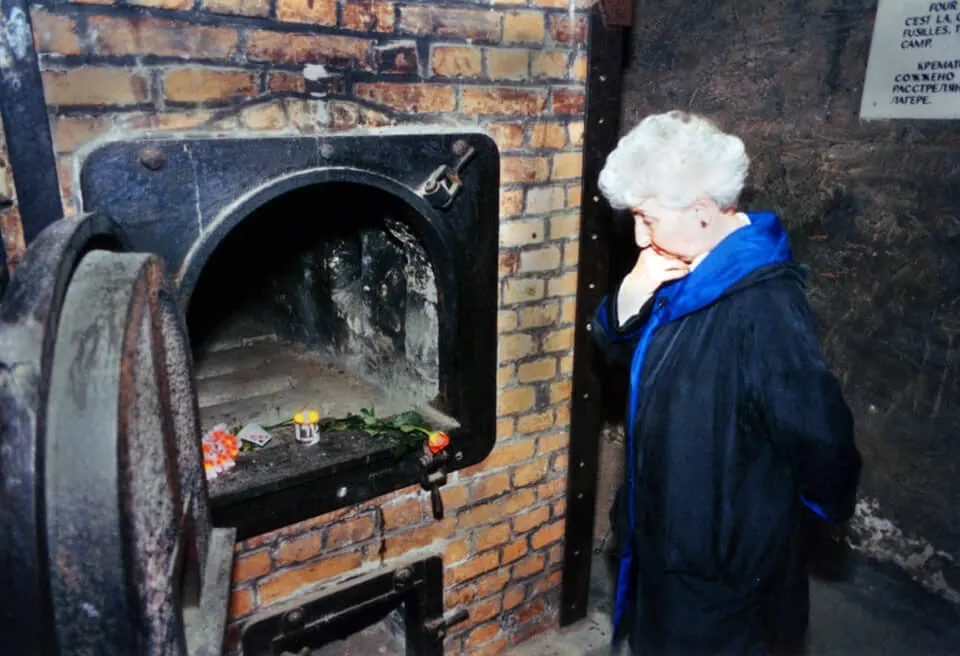

The following article was written in 1995 upon my return from a three week trip shooting the hour long video documentary, “A Journey to Remember.”
In April 1998 it was reprinted during Holocaust Remembrance Week in The Beaverton Valley Times, Tigard Times, and Tualatin Times. The next year it won first place for Best Feature Story in the Oregon Newspaper Publishers Association annual contest.
Let’s join Alice on her incredible journey…
In 1995 Alice Kern of Portland, Oregon, and her four daughters completed a journey of both sorrow and joy to a place and time which, for most of us, exists only in history books.
Auschwitz, Bergen-Belsen, the death march, cattle cars, Dr. Mengele – all grim reminders of a time which, for Alice, was terribly real.
In 1944, when Alice was a young woman in Romania, she and other Jews in her hometown were rounded up and shipped to concentration camps. Most did not survive.
Only after many years of silent grief was it finally possible for Alice to return to the sites of her imprisonment. “I didn’t know I was supposed to talk about it,” Alice says, “I have a number on my arm, but nobody asked me any questions.”
After 30 years she could contain the feelings no longer, and began to write down the chronicles of those early days. Then in the mid-eighties, at the urging of a Christian pastor, she put the words into book form and published “Tapestry of Hope.”
She discovered schools, churches and civic groups were interested in hearing her story in person. Since then she has been the featured speaker at many schools throughout Oregon and Southwest Washington.
So in May of 1995, Alice, then 72, journeyed with her daughters and videographer Robert Bowling to visit the camps and make a documentary video, “A Journey to Remember,” recounting the events of those tortuous days. Why? To soothe the aching in her soul and also leave a legacy for the future; an education project to teach not just about the evil of those days, but about the miracle of survival and the will to keep believing in the future.
Notes from Alice: The curtain is rising. I never thought that the day would come for me to face the darkest days of my life. But after fifty years, surrounded by my four loving daughters, off we go. My heart is pounding. I am afraid of the unknown which is waiting. After a long night flying over Greenland and Iceland, we land in Germany. Many scary and distorted stories we have heard before about neo-Nazi’s and modern persecutions, but after a short drive in our rented van we arrive safely in the small community, Bergen. Accommodations are perfect which soothes our excited souls. Bergen-Belsen is not too far in the distance.
Bergen-Belsen
There are no signs mentioning a concentration camp on the highway, just a small one reading, “Bergen-Belsen.” The parking lot is almost empty in the late afternoon as Alice makes her way into the modern museum complex.
She pauses to sign the visitor’s book, writing: “Alice Kern, I was a survivor of this camp.” It is a significant moment. Her pride in signing seems to be telling the Nazi’s: You did not win, I have had a life!
To one side of the building is a large room with wall after wall of large photographs and murals of all aspects of the Holocaust: The 1938 “Krystallnacht” (night of broken glass) when the SS destroyed Jewish businesses and homes, murdered people, and desecrated synagogues; the bestial ghettos and marches to the cattle cars; the concentration camps and crematoriums; and of course the hideous trenches – a hundred feet wide – piled high with emaciated bodies. All are pictured here for only the bravest of souls to see.
In the central lobby stands a 30-by-10 foot model of the camp as it was in 1945. Alice leans over it, perplexed. She never saw the whole camp before, only her barrack and the bath house. Her eyes glaze over a bit, she is in shock from this view of the whole camp with row after row of barracks and barbed wire.
On the other side of the lobby are the theater and offices for the museum. Alice meets with Dr. Thomas Rahe in the conference room and finds that her book, “Tapestry of Hope” is on the shelves. Dr. Rahe show her a 4-inch thick record book listing names of those imprisoned at the camp. He explains that the SS destroyed all the records, so all information must be pieced together from survivors and relatives. He is not Jewish, but he is quite serious about preserving the history of the camp.
Alice searches for her name in the book, but it is not there., nor is the name of her beloved Aunt Sarah who was a second mother to her. Both were liberated by the Allied Forces and taken to the infirmary as breathing skeletons. At that time, Sarah’s husband Joel located her and sent word that he would come to visit. The next morning, Alice looked over at her aunt’s bed only to see a stranger, a woman mumbling in Italian. No one had to say it; Aunt Sarah had died. Uncle Joel arrived just hours later and was told the tragic news.
Of the 50,000 people who died at Belsen, 14,000 died after liberation.
Alice keeps looking through the book and finds the name of her best friend, Heddy. “I can remember the day she died,” Alice says softly as emotion chokes her voice, “but by that time… I had no more tears.”
Notes: In 1945 as my friends tell me, I looked like I was dead in this camp. Yet when we were liberated somebody heard me still breathing. Now, after 50 years, I am back. Walking into the clearing that was once the camp I am faced with what seems to be miles and miles of reddish brown ground cover – heather. It give me the impression of a burnt ground. We pass a huge mound with the inscription: ‘”Here lies 5,000 dead.” The next huge grave honors 1500 dead; the next 2500. And on it goes, all around the open meadow. Which one of them is my aunt buried in? I will never know.”
Alice stands by the model of the camp and talks to Dr. Rahe, trying to decipher where she was imprisoned. She tells of the miracle of finding a friend from her hometown who was in charge of the bath house and being invited to stay in a nicer barrack with a wooden floor and windows. She was able to get some extra food, a turnip once in a while.
Then the camp was neglected at the end of the war, and for weeks there was no food and no water. Lice were everywhere, infecting thousands of people with typhus. Every morning workers would come by and haul out the dead, piling them up like cordwood. There was neither time nor motive to bury them.
Other museum visitors start to gather around the large table to listen to Alice. It is obvious to those who are aware and speak English, this woman was here. This is no history book or photo exhibit; this is a survivor. There is a sacred silence among the listeners. Alice speaks for 20 minutes, telling many stories of what it was like to be constantly so close to death.
Then she tells of her recovery in Sweden, which took many months. The people were so wonderful there. A group of boys would stand outside the window and send notes in to the refugees. It was in Sweden that she met a handsome photographer named Hugo who had survived Dachau, but had escaped earlier in the war. She would go on to marry him and move to America: Portland, Oregon, where she would raise four daughters.
As she finishes her story, she simply shrugs, “My husband told me we cannot live with anger and hatred because it will destroy us. We must move on and hope. So this is my message: We must make sure that this never happens again. And we must always have respect for every person.”
Before leaving for Poland to find Auschwitz, Alice takes her daughters out to the memorial wall at the far end of the grave mounds. The sun is out, but there is a cold bite to the air; the wind whips steadily, yet somehow honors an eerie silence amid the graves. Amid 50,000 people, Heddy, and Aunt Sarah.

We stop by the wall near the inscription, “In memory of those who died in this place.” We light a candle and say our mourners kaddish for my aunt, my best friend Heddy, and all who perished in this place. All the lice-infested barracks have been burned down long ago, but I can see them; I can remember them. This place is ours, the survivor’s cemetery.
As I once again leave this place behind we drive past a NATO base and a sign reading “British Compound.” They never left! I have such admiration for those heroes who liberated us. They were just young men trained to fight a war, but then to find us skeletons: the dead and the barely living. I will always be grateful for the miracle that I could survive such evil.
Auschwitz
Auschwitz. The word known to so many, the place known to so few. It was not a concentration camp, it was a death factory.
Now 50 years later, Alice Kern links arms with her four daughters and walks bravely under the main gate of Auschwitz II/ Birkenau. She is describing her feelings on videotape about this courageous moment when the air is jolted by the wail of an air-raid siren.
Its screeching note ebbs and flows like the cries of a banshee. Alice looks up, frightened. “Where are the planes?” she asks. “In 1944 we heard that sound
every afternoon.”
Notes from Alice: I can still remember Mengele and the selection, but now I can see around me. It was dark before, with spotlights beaming down on us. My mother and my two little cousins were sent to the left, I was sent to the right.
I never saw my mother or my cousins again.

The immensity of this camp is startling. Imagine an area the size of two 18-hole golf courses. Down the middle for 1,000 yards run two train tracks with wide gravel avenues on each side for unloading the human cargo.
High barbed-wire fences and guard towers surround the tracks. To one side, numerous low-slung barracks with few windows still stand. On the other side sprawls an immense field filled with row upon row of chimneys, stark icons 25 feet high, the only remains of barracks that once held captive, Jews, Gypsies, Gays, Christians and other detested people.
Alice finds a barrack in lager (section) A. She doesn’t know if it is the one she lived in, but it doesn’t matter, they were all alike.
We enter one of the barracks and I scream. These are the cubby holes I describe in my book and talk about to the school children. We slept eight or more to a shelf, with no room to even turn over in the night.
Memory after memory surfaces, and I feel faint. How much strength it takes to stand here today, to touch the dead barbed wire fences, to see the bathhouse with its disinfectant apparatus.
Barbed wire. It surrounds each lager 10 feet high. The posts, with a menacing crook inward at the top, are made of cement with insulators holding the once electrified wire. Lager A, Lager B, Lager C: There are so many sections, all surrounded by the imprisoning wire.
And the lines are so crisp. Everything linear and logical, engineered to be orderly and systematic. Seventy-five percent of each train load of people were “selected” for immediate disposal. The average life-expectancy of those chosen for work was three months. About 1 1/2 million people were killed in this one camp.
There were four gas chamber/crematoriums, located at the end of the tracks, the termination point. At one time they burned day and night, but they are ruins now, a fittingly twisted and lifeless mass of bricks that were blown up by the retreating Germans as the Russian troops closed in.
Alice points to Birkenau, the area
within the dashed line. Each little box
is a barrack 200 ft long. Auschwitz I
is at the bottom left.
More information can be found at www.alicekern.com .

My daughters and I are looking for the place where the hundreds and thousands were gassed, also my mother with my two little cousins. We find a huge pile of rubble, a blasted destroyed crematorium; this is our place to say a prayer. We cried, said our prayer, then left.
To survive something like this nightmare, today one cannot comprehend. But I am so proud of my daughters, their strength and support, and for being next to me all the time. I suppose my energy lasted just because of them, otherwise my legs and overwhelmed soul would have collapsed long before.

IN MEMORY – Praying at the ruins of Auschwitz crematorium, Alice and her daughters (from left, Sue Wendel, Geri Senft, Debbi Montrose, and Evie Oxman) light a candle in memory of their relatives who perished there.
Auschwitz I is 2 miles away, much smaller than Birkenau. It is near the center of the little Polish town of Oswiecim and is preserved with almost all the buildings intact. Alice finds the museum for the Hungarian Jews (her part of Romania was previously in Hungary) and looks over several rooms of photos giving the history of the persecution.
There are also exhibits for Denmark, Poland, Austria, France, Italy and several other countries, each with its own story and reaction to the “final solution” for the Jews of Europe.
Alice finds a quotation and says it must be filmed. She looks into the camera intently: “I want to tell the world why I am here.” She points to the plain black sign with white letters, and reads with force, “THE ONE WHO DOES NOT REMEMBER HISTORY IS BOUND TO LIVE IT THROUGH AGAIN. We must never, ever forget what happened here.”
She continues through many of the exhibits, finding rooms full of shoes, large mounds of human hair and eyeglasses, even an insidious pile of empty buckets once containing the Zyclon B genocidal gas. Later Alice stands outside the small crematorium of Auschwitz I and looks into the video camera.
“Well, I am about to go into a crematorium, where I have never been before.” She walks down a narrow ramp and into a barren room with the brick ovens. She finds them intact with black iron doors swung open to reveal not ashes or bones but a candle, a note and a flower.
“So, these are the famous ovens,” she says. “I have seen many pictures. Shocking.” She stares blankly at the opening, this time thinking not so much of the friends and family she lost, but just for a moment, herself.
She sighs. “I still believe in miracles. Three times I was selected with skinny girls, but always by some miracle I was saved.”

As she leaves the complex, Alice wants to film the famous iron gate with the words wrought overhead: “Arbeit Macht Frei” – work makes you free. But Alice says fighting evil makes you free, which is how the Nazi’s were finally overcome. Now Alice champions freedom as she holds her head high and walks down the road, out of Auschwitz.
Final notes from her journal:
The journey ended when we found the famous gate “Arbeit Macht Frei.” But this time we all walked out on our own, well dressed and fed. I do not think I will return again.
Further information and stories can be found at www.alicekern.com .